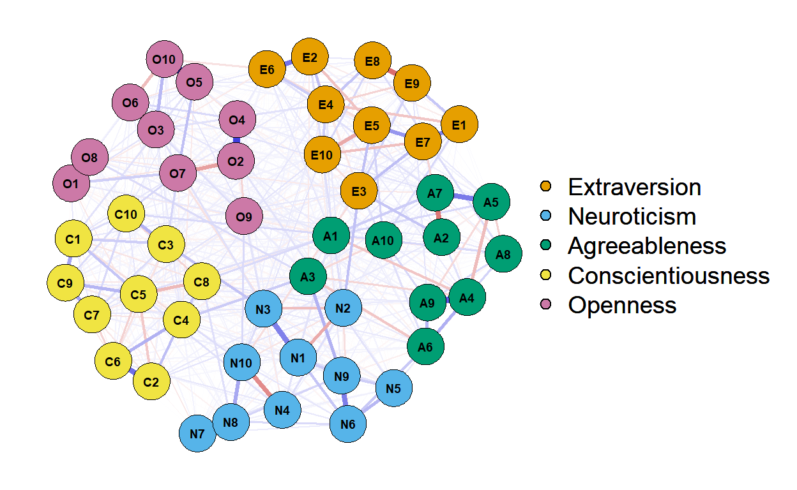
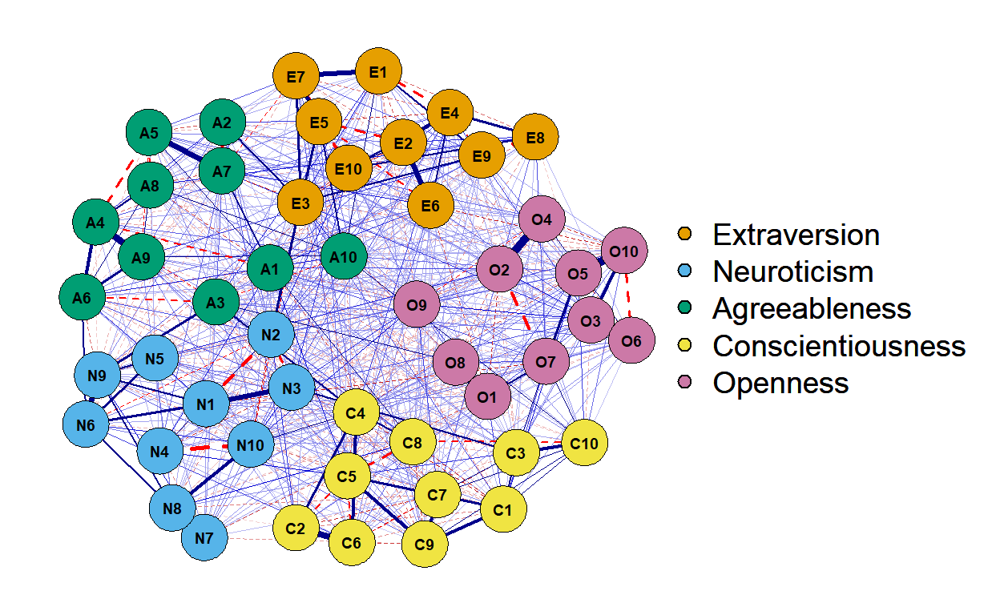

In this post, I will be examining response data from Big 5 Personality Inventory with the Network psychometrics approach.
(7 min read)
Hi, everyone. We are heading into spring here in Edmonton. There is no class to teach, so I have some more free time to work on projects that I have on hands. I took an advance psychometric course this past winter 2023 semester and learned a lot of useful techniques. One of them is Network psychometrics.
Network psychometrics is a relatively novel approach to psychometrics research that examines relationships between observed variables (assessment items) without relying on the assumption of latent variables (Borsboom et al., 2021). Items that are related to each other may appear closer while items that are less relevant may be positioned further on a network graph. This approach offers an alternative evidence to validity of the interpretations and uses of a test in addition to the traditional factor analysis method
(Christensen & Golino, 2021).
In this post, I used response data to the Big 5 personality inventory from the open-source psychometrics project. Items from the test were put together from the international personality item pool. The data set has N = 19,719 responses to 50 Likert-scale items asking of respondents’ agreement to the presented statements such as “I don’t talk a lot”, “I shirk my duties”, or “I am quick to understand things”. Responses were coded as 1 to, where 1=Disagree, 3=Neutral, 5=Agree. Five personality traits of extraversion, neuroticism, agreeableness, conscientiousness, and openness to experience are reported as results.
We will start by loading packages that we will use.
estimateNetwork function from bootnet package. Relationships between items will be determined by polychoric correlations, and the network graph was estimated with the graphical least absolute shrinkage and selection operator (Glasso) estimator.network_big5 <- bootnet::estimateNetwork(
data = df_response,
# Alternatively, "cov" for covariances, "cor" for correlations
corMethod = "cor_auto", # for polychoric and polyserial correlations
# Alternatively, "ggmModSelect" for an unregularized GGM using glasso
default = "EBICglasso", # for estimating GGM with gLASSO and EBIC
tuning = 0.5 # EBIC tuning parameter; set to zero for BIC model selection. If you make it large, you should justify it.
)plot(network_big5,
layout = "spring",
palette = "colorblind",
groups = groups, # to label each group
font = 2,
label.cex = 1
) 
prune function from psychonetrics package to prune edges that do not achieve statistical significance at alpha 0.05 (step down method). Then, we will add more edges until model fit of the data set based on Bayesian Information Criterion (BIC) does not improve anymore based on alpha = 0.05 with the stepup function (step up method).network_big5_optimized <- psychonetrics::ggm(df_response,
vars = obsvars) %>%
psychonetrics::runmodel() %>%
psychonetrics::prune(adjust = "fdr", alpha = 0.05) %>%
# To automatically add edges at alpha=0.05 until BIC is no longer be improved
psychonetrics::stepup(criterion = "bic", alpha = 0.05) %>%
psychonetrics::modelsearch() Measure Value
logl -1373902.53
unrestricted.logl -1373377.80
baseline.logl -1561979.97
nvar 50
nobs 1325
npar 747
df 578
objective 47.45
chisq 1049.45
pvalue ~ 0
baseline.chisq 377204.34
baseline.df 1225
baseline.pvalue ~ 0
nfi 1.0
pnfi 0.47
tli 1.0
nnfi 1.0
rfi 0.99
ifi 1.0
rni 1.0
cfi 1.0
rmsea 0.0064
rmsea.ci.lower 0.0058
rmsea.ci.upper 0.0070
rmsea.pvalue 1
aic.ll 2749299.06
aic.ll2 2749357.96
aic.x -106.55
aic.x2 2543.45
bic 2755192.39
bic2 2752818.46
ebic.25 2758114.67
ebic.5 2761036.96
ebic.75 2763374.78
ebic1 2766881.52
Aside from investigating the network structure, we can also use the network approach to examine dimensional stability of the test with the exploratory graph analysis (EGA) method. EGA tests dimensional stability of a test by examining its structure across several resampling iterations. In other words, EGA checks if structure of the test is similar across different response patterns.
We will use the bootEGA function from the EGAnet package to perform EGA with the big 5 personality inventory data. Usually 500 resampling iterations is recommended, but we will stick to 100 to make it computationally feasible.
bootEGA_big5 <- EGAnet::bootEGA(
# we could also provide the cor matrix but then
# n (i.e., number of rows) must also be specified
data = df_response,
cor = "cor_auto",
uni.method = "louvain",
iter = 100, # Number of replica samples to generate
# resampling" for n random subsamples of the original data
# parametric" for n synthetic samples from multivariate normal dist.
type = "parametric",
# EGA Uses standard exploratory graph analysis
# EGA.fit Uses total entropy fit index (tefi) to determine best fit of EGA
# hierEGA Uses hierarchical exploratory graph analysis
EGA.type = "EGA",
model = "glasso",
algorithm = "walktrap", # or "louvain" (better for unidimensional structures)
# use "highest_modularity", "most_common", or "lowest_tefi"
consensus.method = "highest_modularity",
typicalStructure = TRUE, # typical network of partial correlations
plot.typicalStructure = TRUE, # returns a plot of the typical network
ncores = 4, # Number of cores to use in computing results
progress = FALSE ,
summary.table = TRUE
)# View the number of communities
bootEGA_big5$EGANumber of communities: 5
E1 E2 E3 E4 E5 E6 E7 E8 E9 E10 N1 N2 N3 N4 N5 N6 N7
5 5 5 5 5 5 5 5 5 5 3 3 3 3 3 3 3
N8 N9 N10 A1 A2 A3 A4 A5 A6 A7 A8 A9 A10 C1 C2 C3 C4
3 3 3 2 2 2 2 2 2 2 2 2 2 4 4 4 4
C5 C6 C7 C8 C9 C10 O1 O2 O3 O4 O5 O6 O7 O8 O9 O10
4 4 4 4 4 4 1 1 1 1 1 1 1 1 1 1
Methods:
Correlations = auto (from qgraph)
Model = glasso
Algorithm = walktrap
Unidimensional Method = louvain with consensus clusteringbootEGA_big5$typicalGraph$typical.dim.variables items dimension
O1 O1 1
O2 O2 1
O3 O3 1
O4 O4 1
O5 O5 1
O6 O6 1
O7 O7 1
O8 O8 1
O9 O9 1
O10 O10 1
A1 A1 2
A2 A2 2
A3 A3 2
A4 A4 2
A5 A5 2
A6 A6 2
A7 A7 2
A8 A8 2
A9 A9 2
A10 A10 2
N1 N1 3
N2 N2 3
N3 N3 3
N4 N4 3
N5 N5 3
N6 N6 3
N7 N7 3
N8 N8 3
N9 N9 3
N10 N10 3
C1 C1 4
C2 C2 4
C3 C3 4
C4 C4 4
C5 C5 4
C6 C6 4
C7 C7 4
C8 C8 4
C9 C9 4
C10 C10 4
E1 E1 5
E2 E2 5
E3 E3 5
E4 E4 5
E5 E5 5
E6 E6 5
E7 E7 5
E8 E8 5
E9 E9 5
E10 E10 5# Dimension (i.e., structural) stability results
dim_big5 <- EGAnet::dimensionStability(bootEGA_big5)dim_big5$dimension.stability$structural.consistency
1 2 3 4 5
1 1 1 1 1
$average.item.stability
1 2 3 4 5
1 1 1 1 1 # Item stability results
dim_big5$item.stability$membership
$membership$empirical
E1 E2 E3 E4 E5 E6 E7 E8 E9 E10 N1 N2 N3 N4 N5 N6 N7
5 5 5 5 5 5 5 5 5 5 3 3 3 3 3 3 3
N8 N9 N10 A1 A2 A3 A4 A5 A6 A7 A8 A9 A10 C1 C2 C3 C4
3 3 3 2 2 2 2 2 2 2 2 2 2 4 4 4 4
C5 C6 C7 C8 C9 C10 O1 O2 O3 O4 O5 O6 O7 O8 O9 O10
4 4 4 4 4 4 1 1 1 1 1 1 1 1 1 1
$membership$unique
[1] 5 3 2 4 1
$membership$bootstrap
[,1] [,2] [,3] [,4] [,5] [,6] [,7] [,8] [,9] [,10] [,11] [,12]
E1 5 5 5 5 5 5 5 5 5 5 5 5
E2 5 5 5 5 5 5 5 5 5 5 5 5
E3 5 5 5 5 5 5 5 5 5 5 5 5
E4 5 5 5 5 5 5 5 5 5 5 5 5
E5 5 5 5 5 5 5 5 5 5 5 5 5
E6 5 5 5 5 5 5 5 5 5 5 5 5
E7 5 5 5 5 5 5 5 5 5 5 5 5
E8 5 5 5 5 5 5 5 5 5 5 5 5
E9 5 5 5 5 5 5 5 5 5 5 5 5
E10 5 5 5 5 5 5 5 5 5 5 5 5
N1 3 3 3 3 3 3 3 3 3 3 3 3
N2 3 3 3 3 3 3 3 3 3 3 3 3
N3 3 3 3 3 3 3 3 3 3 3 3 3
N4 3 3 3 3 3 3 3 3 3 3 3 3
N5 3 3 3 3 3 3 3 3 3 3 3 3
N6 3 3 3 3 3 3 3 3 3 3 3 3
N7 3 3 3 3 3 3 3 3 3 3 3 3
N8 3 3 3 3 3 3 3 3 3 3 3 3
N9 3 3 3 3 3 3 3 3 3 3 3 3
N10 3 3 3 3 3 3 3 3 3 3 3 3
A1 2 2 2 2 2 2 2 2 2 2 2 2
A2 2 2 2 2 2 2 2 2 2 2 2 2
A3 2 2 2 2 2 2 2 2 2 2 2 2
A4 2 2 2 2 2 2 2 2 2 2 2 2
A5 2 2 2 2 2 2 2 2 2 2 2 2
A6 2 2 2 2 2 2 2 2 2 2 2 2
A7 2 2 2 2 2 2 2 2 2 2 2 2
A8 2 2 2 2 2 2 2 2 2 2 2 2
A9 2 2 2 2 2 2 2 2 2 2 2 2
A10 2 2 2 2 2 2 2 2 2 2 2 2
C1 4 4 4 4 4 4 4 4 4 4 4 4
C2 4 4 4 4 4 4 4 4 4 4 4 4
C3 4 4 4 4 4 4 4 4 4 4 4 4
C4 4 4 4 4 4 4 4 4 4 4 4 4
C5 4 4 4 4 4 4 4 4 4 4 4 4
C6 4 4 4 4 4 4 4 4 4 4 4 4
C7 4 4 4 4 4 4 4 4 4 4 4 4
C8 4 4 4 4 4 4 4 4 4 4 4 4
C9 4 4 4 4 4 4 4 4 4 4 4 4
C10 4 4 4 4 4 4 4 4 4 4 4 4
O1 1 1 1 1 1 1 1 1 1 1 1 1
O2 1 1 1 1 1 1 1 1 1 1 1 1
O3 1 1 1 1 1 1 1 1 1 1 1 1
O4 1 1 1 1 1 1 1 1 1 1 1 1
O5 1 1 1 1 1 1 1 1 1 1 1 1
O6 1 1 1 1 1 1 1 1 1 1 1 1
O7 1 1 1 1 1 1 1 1 1 1 1 1
O8 1 1 1 1 1 1 1 1 1 1 1 1
O9 1 1 1 1 1 1 1 1 1 1 1 1
O10 1 1 1 1 1 1 1 1 1 1 1 1
[,13] [,14] [,15] [,16] [,17] [,18] [,19] [,20] [,21] [,22] [,23]
E1 5 5 5 5 5 5 5 5 5 5 5
E2 5 5 5 5 5 5 5 5 5 5 5
E3 5 5 5 5 5 5 5 5 5 5 5
E4 5 5 5 5 5 5 5 5 5 5 5
E5 5 5 5 5 5 5 5 5 5 5 5
E6 5 5 5 5 5 5 5 5 5 5 5
E7 5 5 5 5 5 5 5 5 5 5 5
E8 5 5 5 5 5 5 5 5 5 5 5
E9 5 5 5 5 5 5 5 5 5 5 5
E10 5 5 5 5 5 5 5 5 5 5 5
N1 3 3 3 3 3 3 3 3 3 3 3
N2 3 3 3 3 3 3 3 3 3 3 3
N3 3 3 3 3 3 3 3 3 3 3 3
N4 3 3 3 3 3 3 3 3 3 3 3
N5 3 3 3 3 3 3 3 3 3 3 3
N6 3 3 3 3 3 3 3 3 3 3 3
N7 3 3 3 3 3 3 3 3 3 3 3
N8 3 3 3 3 3 3 3 3 3 3 3
N9 3 3 3 3 3 3 3 3 3 3 3
N10 3 3 3 3 3 3 3 3 3 3 3
A1 2 2 2 2 2 2 2 2 2 2 2
A2 2 2 2 2 2 2 2 2 2 2 2
A3 2 2 2 2 2 2 2 2 2 2 2
A4 2 2 2 2 2 2 2 2 2 2 2
A5 2 2 2 2 2 2 2 2 2 2 2
A6 2 2 2 2 2 2 2 2 2 2 2
A7 2 2 2 2 2 2 2 2 2 2 2
A8 2 2 2 2 2 2 2 2 2 2 2
A9 2 2 2 2 2 2 2 2 2 2 2
A10 2 2 2 2 2 2 2 2 2 2 2
C1 4 4 4 4 4 4 4 4 4 4 4
C2 4 4 4 4 4 4 4 4 4 4 4
C3 4 4 4 4 4 4 4 4 4 4 4
C4 4 4 4 4 4 4 4 4 4 4 4
C5 4 4 4 4 4 4 4 4 4 4 4
C6 4 4 4 4 4 4 4 4 4 4 4
C7 4 4 4 4 4 4 4 4 4 4 4
C8 4 4 4 4 4 4 4 4 4 4 4
C9 4 4 4 4 4 4 4 4 4 4 4
C10 4 4 4 4 4 4 4 4 4 4 4
O1 1 1 1 1 1 1 1 1 1 1 1
O2 1 1 1 1 1 1 1 1 1 1 1
O3 1 1 1 1 1 1 1 1 1 1 1
O4 1 1 1 1 1 1 1 1 1 1 1
O5 1 1 1 1 1 1 1 1 1 1 1
O6 1 1 1 1 1 1 1 1 1 1 1
O7 1 1 1 1 1 1 1 1 1 1 1
O8 1 1 1 1 1 1 1 1 1 1 1
O9 1 1 1 1 1 1 1 1 1 1 1
O10 1 1 1 1 1 1 1 1 1 1 1
[,24] [,25] [,26] [,27] [,28] [,29] [,30] [,31] [,32] [,33] [,34]
E1 5 5 5 5 5 5 5 5 5 5 5
E2 5 5 5 5 5 5 5 5 5 5 5
E3 5 5 5 5 5 5 5 5 5 5 5
E4 5 5 5 5 5 5 5 5 5 5 5
E5 5 5 5 5 5 5 5 5 5 5 5
E6 5 5 5 5 5 5 5 5 5 5 5
E7 5 5 5 5 5 5 5 5 5 5 5
E8 5 5 5 5 5 5 5 5 5 5 5
E9 5 5 5 5 5 5 5 5 5 5 5
E10 5 5 5 5 5 5 5 5 5 5 5
N1 3 3 3 3 3 3 3 3 3 3 3
N2 3 3 3 3 3 3 3 3 3 3 3
N3 3 3 3 3 3 3 3 3 3 3 3
N4 3 3 3 3 3 3 3 3 3 3 3
N5 3 3 3 3 3 3 3 3 3 3 3
N6 3 3 3 3 3 3 3 3 3 3 3
N7 3 3 3 3 3 3 3 3 3 3 3
N8 3 3 3 3 3 3 3 3 3 3 3
N9 3 3 3 3 3 3 3 3 3 3 3
N10 3 3 3 3 3 3 3 3 3 3 3
A1 2 2 2 2 2 2 2 2 2 2 2
A2 2 2 2 2 2 2 2 2 2 2 2
A3 2 2 2 2 2 2 2 2 2 2 2
A4 2 2 2 2 2 2 2 2 2 2 2
A5 2 2 2 2 2 2 2 2 2 2 2
A6 2 2 2 2 2 2 2 2 2 2 2
A7 2 2 2 2 2 2 2 2 2 2 2
A8 2 2 2 2 2 2 2 2 2 2 2
A9 2 2 2 2 2 2 2 2 2 2 2
A10 2 2 2 2 2 2 2 2 2 2 2
C1 4 4 4 4 4 4 4 4 4 4 4
C2 4 4 4 4 4 4 4 4 4 4 4
C3 4 4 4 4 4 4 4 4 4 4 4
C4 4 4 4 4 4 4 4 4 4 4 4
C5 4 4 4 4 4 4 4 4 4 4 4
C6 4 4 4 4 4 4 4 4 4 4 4
C7 4 4 4 4 4 4 4 4 4 4 4
C8 4 4 4 4 4 4 4 4 4 4 4
C9 4 4 4 4 4 4 4 4 4 4 4
C10 4 4 4 4 4 4 4 4 4 4 4
O1 1 1 1 1 1 1 1 1 1 1 1
O2 1 1 1 1 1 1 1 1 1 1 1
O3 1 1 1 1 1 1 1 1 1 1 1
O4 1 1 1 1 1 1 1 1 1 1 1
O5 1 1 1 1 1 1 1 1 1 1 1
O6 1 1 1 1 1 1 1 1 1 1 1
O7 1 1 1 1 1 1 1 1 1 1 1
O8 1 1 1 1 1 1 1 1 1 1 1
O9 1 1 1 1 1 1 1 1 1 1 1
O10 1 1 1 1 1 1 1 1 1 1 1
[,35] [,36] [,37] [,38] [,39] [,40] [,41] [,42] [,43] [,44] [,45]
E1 5 5 5 5 5 5 5 5 5 5 5
E2 5 5 5 5 5 5 5 5 5 5 5
E3 5 5 5 5 5 5 5 5 5 5 5
E4 5 5 5 5 5 5 5 5 5 5 5
E5 5 5 5 5 5 5 5 5 5 5 5
E6 5 5 5 5 5 5 5 5 5 5 5
E7 5 5 5 5 5 5 5 5 5 5 5
E8 5 5 5 5 5 5 5 5 5 5 5
E9 5 5 5 5 5 5 5 5 5 5 5
E10 5 5 5 5 5 5 5 5 5 5 5
N1 3 3 3 3 3 3 3 3 3 3 3
N2 3 3 3 3 3 3 3 3 3 3 3
N3 3 3 3 3 3 3 3 3 3 3 3
N4 3 3 3 3 3 3 3 3 3 3 3
N5 3 3 3 3 3 3 3 3 3 3 3
N6 3 3 3 3 3 3 3 3 3 3 3
N7 3 3 3 3 3 3 3 3 3 3 3
N8 3 3 3 3 3 3 3 3 3 3 3
N9 3 3 3 3 3 3 3 3 3 3 3
N10 3 3 3 3 3 3 3 3 3 3 3
A1 2 2 2 2 2 2 2 2 2 2 2
A2 2 2 2 2 2 2 2 2 2 2 2
A3 2 2 2 2 2 2 2 2 2 2 2
A4 2 2 2 2 2 2 2 2 2 2 2
A5 2 2 2 2 2 2 2 2 2 2 2
A6 2 2 2 2 2 2 2 2 2 2 2
A7 2 2 2 2 2 2 2 2 2 2 2
A8 2 2 2 2 2 2 2 2 2 2 2
A9 2 2 2 2 2 2 2 2 2 2 2
A10 2 2 2 2 2 2 2 2 2 2 2
C1 4 4 4 4 4 4 4 4 4 4 4
C2 4 4 4 4 4 4 4 4 4 4 4
C3 4 4 4 4 4 4 4 4 4 4 4
C4 4 4 4 4 4 4 4 4 4 4 4
C5 4 4 4 4 4 4 4 4 4 4 4
C6 4 4 4 4 4 4 4 4 4 4 4
C7 4 4 4 4 4 4 4 4 4 4 4
C8 4 4 4 4 4 4 4 4 4 4 4
C9 4 4 4 4 4 4 4 4 4 4 4
C10 4 4 4 4 4 4 4 4 4 4 4
O1 1 1 1 1 1 1 1 1 1 1 1
O2 1 1 1 1 1 1 1 1 1 1 1
O3 1 1 1 1 1 1 1 1 1 1 1
O4 1 1 1 1 1 1 1 1 1 1 1
O5 1 1 1 1 1 1 1 1 1 1 1
O6 1 1 1 1 1 1 1 1 1 1 1
O7 1 1 1 1 1 1 1 1 1 1 1
O8 1 1 1 1 1 1 1 1 1 1 1
O9 1 1 1 1 1 1 1 1 1 1 1
O10 1 1 1 1 1 1 1 1 1 1 1
[,46] [,47] [,48] [,49] [,50] [,51] [,52] [,53] [,54] [,55] [,56]
E1 5 5 5 5 5 5 5 5 5 5 5
E2 5 5 5 5 5 5 5 5 5 5 5
E3 5 5 5 5 5 5 5 5 5 5 5
E4 5 5 5 5 5 5 5 5 5 5 5
E5 5 5 5 5 5 5 5 5 5 5 5
E6 5 5 5 5 5 5 5 5 5 5 5
E7 5 5 5 5 5 5 5 5 5 5 5
E8 5 5 5 5 5 5 5 5 5 5 5
E9 5 5 5 5 5 5 5 5 5 5 5
E10 5 5 5 5 5 5 5 5 5 5 5
N1 3 3 3 3 3 3 3 3 3 3 3
N2 3 3 3 3 3 3 3 3 3 3 3
N3 3 3 3 3 3 3 3 3 3 3 3
N4 3 3 3 3 3 3 3 3 3 3 3
N5 3 3 3 3 3 3 3 3 3 3 3
N6 3 3 3 3 3 3 3 3 3 3 3
N7 3 3 3 3 3 3 3 3 3 3 3
N8 3 3 3 3 3 3 3 3 3 3 3
N9 3 3 3 3 3 3 3 3 3 3 3
N10 3 3 3 3 3 3 3 3 3 3 3
A1 2 2 2 2 2 2 2 2 2 2 2
A2 2 2 2 2 2 2 2 2 2 2 2
A3 2 2 2 2 2 2 2 2 2 2 2
A4 2 2 2 2 2 2 2 2 2 2 2
A5 2 2 2 2 2 2 2 2 2 2 2
A6 2 2 2 2 2 2 2 2 2 2 2
A7 2 2 2 2 2 2 2 2 2 2 2
A8 2 2 2 2 2 2 2 2 2 2 2
A9 2 2 2 2 2 2 2 2 2 2 2
A10 2 2 2 2 2 2 2 2 2 2 2
C1 4 4 4 4 4 4 4 4 4 4 4
C2 4 4 4 4 4 4 4 4 4 4 4
C3 4 4 4 4 4 4 4 4 4 4 4
C4 4 4 4 4 4 4 4 4 4 4 4
C5 4 4 4 4 4 4 4 4 4 4 4
C6 4 4 4 4 4 4 4 4 4 4 4
C7 4 4 4 4 4 4 4 4 4 4 4
C8 4 4 4 4 4 4 4 4 4 4 4
C9 4 4 4 4 4 4 4 4 4 4 4
C10 4 4 4 4 4 4 4 4 4 4 4
O1 1 1 1 1 1 1 1 1 1 1 1
O2 1 1 1 1 1 1 1 1 1 1 1
O3 1 1 1 1 1 1 1 1 1 1 1
O4 1 1 1 1 1 1 1 1 1 1 1
O5 1 1 1 1 1 1 1 1 1 1 1
O6 1 1 1 1 1 1 1 1 1 1 1
O7 1 1 1 1 1 1 1 1 1 1 1
O8 1 1 1 1 1 1 1 1 1 1 1
O9 1 1 1 1 1 1 1 1 1 1 1
O10 1 1 1 1 1 1 1 1 1 1 1
[,57] [,58] [,59] [,60] [,61] [,62] [,63] [,64] [,65] [,66] [,67]
E1 5 5 5 5 5 5 5 5 5 5 5
E2 5 5 5 5 5 5 5 5 5 5 5
E3 5 5 5 5 5 5 5 5 5 5 5
E4 5 5 5 5 5 5 5 5 5 5 5
E5 5 5 5 5 5 5 5 5 5 5 5
E6 5 5 5 5 5 5 5 5 5 5 5
E7 5 5 5 5 5 5 5 5 5 5 5
E8 5 5 5 5 5 5 5 5 5 5 5
E9 5 5 5 5 5 5 5 5 5 5 5
E10 5 5 5 5 5 5 5 5 5 5 5
N1 3 3 3 3 3 3 3 3 3 3 3
N2 3 3 3 3 3 3 3 3 3 3 3
N3 3 3 3 3 3 3 3 3 3 3 3
N4 3 3 3 3 3 3 3 3 3 3 3
N5 3 3 3 3 3 3 3 3 3 3 3
N6 3 3 3 3 3 3 3 3 3 3 3
N7 3 3 3 3 3 3 3 3 3 3 3
N8 3 3 3 3 3 3 3 3 3 3 3
N9 3 3 3 3 3 3 3 3 3 3 3
N10 3 3 3 3 3 3 3 3 3 3 3
A1 2 2 2 2 2 2 2 2 2 2 2
A2 2 2 2 2 2 2 2 2 2 2 2
A3 2 2 2 2 2 2 2 2 2 2 2
A4 2 2 2 2 2 2 2 2 2 2 2
A5 2 2 2 2 2 2 2 2 2 2 2
A6 2 2 2 2 2 2 2 2 2 2 2
A7 2 2 2 2 2 2 2 2 2 2 2
A8 2 2 2 2 2 2 2 2 2 2 2
A9 2 2 2 2 2 2 2 2 2 2 2
A10 2 2 2 2 2 2 2 2 2 2 2
C1 4 4 4 4 4 4 4 4 4 4 4
C2 4 4 4 4 4 4 4 4 4 4 4
C3 4 4 4 4 4 4 4 4 4 4 4
C4 4 4 4 4 4 4 4 4 4 4 4
C5 4 4 4 4 4 4 4 4 4 4 4
C6 4 4 4 4 4 4 4 4 4 4 4
C7 4 4 4 4 4 4 4 4 4 4 4
C8 4 4 4 4 4 4 4 4 4 4 4
C9 4 4 4 4 4 4 4 4 4 4 4
C10 4 4 4 4 4 4 4 4 4 4 4
O1 1 1 1 1 1 1 1 1 1 1 1
O2 1 1 1 1 1 1 1 1 1 1 1
O3 1 1 1 1 1 1 1 1 1 1 1
O4 1 1 1 1 1 1 1 1 1 1 1
O5 1 1 1 1 1 1 1 1 1 1 1
O6 1 1 1 1 1 1 1 1 1 1 1
O7 1 1 1 1 1 1 1 1 1 1 1
O8 1 1 1 1 1 1 1 1 1 1 1
O9 1 1 1 1 1 1 1 1 1 1 1
O10 1 1 1 1 1 1 1 1 1 1 1
[,68] [,69] [,70] [,71] [,72] [,73] [,74] [,75] [,76] [,77] [,78]
E1 5 5 5 5 5 5 5 5 5 5 5
E2 5 5 5 5 5 5 5 5 5 5 5
E3 5 5 5 5 5 5 5 5 5 5 5
E4 5 5 5 5 5 5 5 5 5 5 5
E5 5 5 5 5 5 5 5 5 5 5 5
E6 5 5 5 5 5 5 5 5 5 5 5
E7 5 5 5 5 5 5 5 5 5 5 5
E8 5 5 5 5 5 5 5 5 5 5 5
E9 5 5 5 5 5 5 5 5 5 5 5
E10 5 5 5 5 5 5 5 5 5 5 5
N1 3 3 3 3 3 3 3 3 3 3 3
N2 3 3 3 3 3 3 3 3 3 3 3
N3 3 3 3 3 3 3 3 3 3 3 3
N4 3 3 3 3 3 3 3 3 3 3 3
N5 3 3 3 3 3 3 3 3 3 3 3
N6 3 3 3 3 3 3 3 3 3 3 3
N7 3 3 3 3 3 3 3 3 3 3 3
N8 3 3 3 3 3 3 3 3 3 3 3
N9 3 3 3 3 3 3 3 3 3 3 3
N10 3 3 3 3 3 3 3 3 3 3 3
A1 2 2 2 2 2 2 2 2 2 2 2
A2 2 2 2 2 2 2 2 2 2 2 2
A3 2 2 2 2 2 2 2 2 2 2 2
A4 2 2 2 2 2 2 2 2 2 2 2
A5 2 2 2 2 2 2 2 2 2 2 2
A6 2 2 2 2 2 2 2 2 2 2 2
A7 2 2 2 2 2 2 2 2 2 2 2
A8 2 2 2 2 2 2 2 2 2 2 2
A9 2 2 2 2 2 2 2 2 2 2 2
A10 2 2 2 2 2 2 2 2 2 2 2
C1 4 4 4 4 4 4 4 4 4 4 4
C2 4 4 4 4 4 4 4 4 4 4 4
C3 4 4 4 4 4 4 4 4 4 4 4
C4 4 4 4 4 4 4 4 4 4 4 4
C5 4 4 4 4 4 4 4 4 4 4 4
C6 4 4 4 4 4 4 4 4 4 4 4
C7 4 4 4 4 4 4 4 4 4 4 4
C8 4 4 4 4 4 4 4 4 4 4 4
C9 4 4 4 4 4 4 4 4 4 4 4
C10 4 4 4 4 4 4 4 4 4 4 4
O1 1 1 1 1 1 1 1 1 1 1 1
O2 1 1 1 1 1 1 1 1 1 1 1
O3 1 1 1 1 1 1 1 1 1 1 1
O4 1 1 1 1 1 1 1 1 1 1 1
O5 1 1 1 1 1 1 1 1 1 1 1
O6 1 1 1 1 1 1 1 1 1 1 1
O7 1 1 1 1 1 1 1 1 1 1 1
O8 1 1 1 1 1 1 1 1 1 1 1
O9 1 1 1 1 1 1 1 1 1 1 1
O10 1 1 1 1 1 1 1 1 1 1 1
[,79] [,80] [,81] [,82] [,83] [,84] [,85] [,86] [,87] [,88] [,89]
E1 5 5 5 5 5 5 5 5 5 5 5
E2 5 5 5 5 5 5 5 5 5 5 5
E3 5 5 5 5 5 5 5 5 5 5 5
E4 5 5 5 5 5 5 5 5 5 5 5
E5 5 5 5 5 5 5 5 5 5 5 5
E6 5 5 5 5 5 5 5 5 5 5 5
E7 5 5 5 5 5 5 5 5 5 5 5
E8 5 5 5 5 5 5 5 5 5 5 5
E9 5 5 5 5 5 5 5 5 5 5 5
E10 5 5 5 5 5 5 5 5 5 5 5
N1 3 3 3 3 3 3 3 3 3 3 3
N2 3 3 3 3 3 3 3 3 3 3 3
N3 3 3 3 3 3 3 3 3 3 3 3
N4 3 3 3 3 3 3 3 3 3 3 3
N5 3 3 3 3 3 3 3 3 3 3 3
N6 3 3 3 3 3 3 3 3 3 3 3
N7 3 3 3 3 3 3 3 3 3 3 3
N8 3 3 3 3 3 3 3 3 3 3 3
N9 3 3 3 3 3 3 3 3 3 3 3
N10 3 3 3 3 3 3 3 3 3 3 3
A1 2 2 2 2 2 2 2 2 2 2 2
A2 2 2 2 2 2 2 2 2 2 2 2
A3 2 2 2 2 2 2 2 2 2 2 2
A4 2 2 2 2 2 2 2 2 2 2 2
A5 2 2 2 2 2 2 2 2 2 2 2
A6 2 2 2 2 2 2 2 2 2 2 2
A7 2 2 2 2 2 2 2 2 2 2 2
A8 2 2 2 2 2 2 2 2 2 2 2
A9 2 2 2 2 2 2 2 2 2 2 2
A10 2 2 2 2 2 2 2 2 2 2 2
C1 4 4 4 4 4 4 4 4 4 4 4
C2 4 4 4 4 4 4 4 4 4 4 4
C3 4 4 4 4 4 4 4 4 4 4 4
C4 4 4 4 4 4 4 4 4 4 4 4
C5 4 4 4 4 4 4 4 4 4 4 4
C6 4 4 4 4 4 4 4 4 4 4 4
C7 4 4 4 4 4 4 4 4 4 4 4
C8 4 4 4 4 4 4 4 4 4 4 4
C9 4 4 4 4 4 4 4 4 4 4 4
C10 4 4 4 4 4 4 4 4 4 4 4
O1 1 1 1 1 1 1 1 1 1 1 1
O2 1 1 1 1 1 1 1 1 1 1 1
O3 1 1 1 1 1 1 1 1 1 1 1
O4 1 1 1 1 1 1 1 1 1 1 1
O5 1 1 1 1 1 1 1 1 1 1 1
O6 1 1 1 1 1 1 1 1 1 1 1
O7 1 1 1 1 1 1 1 1 1 1 1
O8 1 1 1 1 1 1 1 1 1 1 1
O9 1 1 1 1 1 1 1 1 1 1 1
O10 1 1 1 1 1 1 1 1 1 1 1
[,90] [,91] [,92] [,93] [,94] [,95] [,96] [,97] [,98] [,99]
E1 5 5 5 5 5 5 5 5 5 5
E2 5 5 5 5 5 5 5 5 5 5
E3 5 5 5 5 5 5 5 5 5 5
E4 5 5 5 5 5 5 5 5 5 5
E5 5 5 5 5 5 5 5 5 5 5
E6 5 5 5 5 5 5 5 5 5 5
E7 5 5 5 5 5 5 5 5 5 5
E8 5 5 5 5 5 5 5 5 5 5
E9 5 5 5 5 5 5 5 5 5 5
E10 5 5 5 5 5 5 5 5 5 5
N1 3 3 3 3 3 3 3 3 3 3
N2 3 3 3 3 3 3 3 3 3 3
N3 3 3 3 3 3 3 3 3 3 3
N4 3 3 3 3 3 3 3 3 3 3
N5 3 3 3 3 3 3 3 3 3 3
N6 3 3 3 3 3 3 3 3 3 3
N7 3 3 3 3 3 3 3 3 3 3
N8 3 3 3 3 3 3 3 3 3 3
N9 3 3 3 3 3 3 3 3 3 3
N10 3 3 3 3 3 3 3 3 3 3
A1 2 2 2 2 2 2 2 2 2 2
A2 2 2 2 2 2 2 2 2 2 2
A3 2 2 2 2 2 2 2 2 2 2
A4 2 2 2 2 2 2 2 2 2 2
A5 2 2 2 2 2 2 2 2 2 2
A6 2 2 2 2 2 2 2 2 2 2
A7 2 2 2 2 2 2 2 2 2 2
A8 2 2 2 2 2 2 2 2 2 2
A9 2 2 2 2 2 2 2 2 2 2
A10 2 2 2 2 2 2 2 2 2 2
C1 4 4 4 4 4 4 4 4 4 4
C2 4 4 4 4 4 4 4 4 4 4
C3 4 4 4 4 4 4 4 4 4 4
C4 4 4 4 4 4 4 4 4 4 4
C5 4 4 4 4 4 4 4 4 4 4
C6 4 4 4 4 4 4 4 4 4 4
C7 4 4 4 4 4 4 4 4 4 4
C8 4 4 4 4 4 4 4 4 4 4
C9 4 4 4 4 4 4 4 4 4 4
C10 4 4 4 4 4 4 4 4 4 4
O1 1 1 1 1 1 1 1 1 1 1
O2 1 1 1 1 1 1 1 1 1 1
O3 1 1 1 1 1 1 1 1 1 1
O4 1 1 1 1 1 1 1 1 1 1
O5 1 1 1 1 1 1 1 1 1 1
O6 1 1 1 1 1 1 1 1 1 1
O7 1 1 1 1 1 1 1 1 1 1
O8 1 1 1 1 1 1 1 1 1 1
O9 1 1 1 1 1 1 1 1 1 1
O10 1 1 1 1 1 1 1 1 1 1
[,100]
E1 5
E2 5
E3 5
E4 5
E5 5
E6 5
E7 5
E8 5
E9 5
E10 5
N1 3
N2 3
N3 3
N4 3
N5 3
N6 3
N7 3
N8 3
N9 3
N10 3
A1 2
A2 2
A3 2
A4 2
A5 2
A6 2
A7 2
A8 2
A9 2
A10 2
C1 4
C2 4
C3 4
C4 4
C5 4
C6 4
C7 4
C8 4
C9 4
C10 4
O1 1
O2 1
O3 1
O4 1
O5 1
O6 1
O7 1
O8 1
O9 1
O10 1
$item.stability
$item.stability$empirical.dimensions
O1 O2 O3 O4 O5 O6 O7 O8 O9 O10 A1 A2 A3 A4 A5 A6 A7
1 1 1 1 1 1 1 1 1 1 1 1 1 1 1 1 1
A8 A9 A10 N1 N2 N3 N4 N5 N6 N7 N8 N9 N10 C1 C2 C3 C4
1 1 1 1 1 1 1 1 1 1 1 1 1 1 1 1 1
C5 C6 C7 C8 C9 C10 E1 E2 E3 E4 E5 E6 E7 E8 E9 E10
1 1 1 1 1 1 1 1 1 1 1 1 1 1 1 1
$item.stability$all.dimensions
1 2 3 4 5
O1 1 0 0 0 0
O2 1 0 0 0 0
O3 1 0 0 0 0
O4 1 0 0 0 0
O5 1 0 0 0 0
O6 1 0 0 0 0
O7 1 0 0 0 0
O8 1 0 0 0 0
O9 1 0 0 0 0
O10 1 0 0 0 0
A1 0 1 0 0 0
A2 0 1 0 0 0
A3 0 1 0 0 0
A4 0 1 0 0 0
A5 0 1 0 0 0
A6 0 1 0 0 0
A7 0 1 0 0 0
A8 0 1 0 0 0
A9 0 1 0 0 0
A10 0 1 0 0 0
N1 0 0 1 0 0
N2 0 0 1 0 0
N3 0 0 1 0 0
N4 0 0 1 0 0
N5 0 0 1 0 0
N6 0 0 1 0 0
N7 0 0 1 0 0
N8 0 0 1 0 0
N9 0 0 1 0 0
N10 0 0 1 0 0
C1 0 0 0 1 0
C2 0 0 0 1 0
C3 0 0 0 1 0
C4 0 0 0 1 0
C5 0 0 0 1 0
C6 0 0 0 1 0
C7 0 0 0 1 0
C8 0 0 0 1 0
C9 0 0 0 1 0
C10 0 0 0 1 0
E1 0 0 0 0 1
E2 0 0 0 0 1
E3 0 0 0 0 1
E4 0 0 0 0 1
E5 0 0 0 0 1
E6 0 0 0 0 1
E7 0 0 0 0 1
E8 0 0 0 0 1
E9 0 0 0 0 1
E10 0 0 0 0 1
$plot
$mean.loadings
1 2 3 4 5
O1 0.30720 -0.00221 -0.00160 0.00456 -0.01138
O2 -0.29093 0.00492 0.04399 0.00098 0.00649
O3 0.25147 0.00162 0.00959 -0.02048 -0.00347
O4 -0.23413 -0.01246 -0.00031 0.00609 0.00063
O5 0.25141 0.01206 -0.00408 0.04092 0.02301
O6 -0.26856 -0.00680 0.00000 0.00000 0.01373
O7 0.18369 0.00716 -0.01910 0.08451 0.00000
O8 0.24276 0.03165 0.00532 -0.01625 -0.00529
O9 0.10796 0.03400 0.04442 0.02276 -0.00433
O10 0.34513 0.00150 0.00000 0.00780 0.02958
A1 -0.01025 0.14071 0.00551 -0.01950 0.01227
A2 0.00160 0.19575 0.00000 -0.01028 0.07268
A3 0.02445 0.11329 0.06184 -0.06368 0.03116
A4 0.00985 0.40845 0.01414 0.00000 0.00002
A5 -0.00415 -0.28542 -0.00007 -0.00001 0.00073
A6 -0.01330 0.22036 0.04996 0.00000 0.00014
A7 -0.00937 -0.30437 0.00907 -0.00492 -0.00137
A8 0.00252 0.22963 -0.00030 0.00958 0.00943
A9 0.02002 0.31385 0.00795 0.00829 0.00000
A10 0.02088 0.12357 -0.01261 0.02884 0.09563
N1 -0.01954 0.00033 0.31789 -0.00424 -0.00012
N2 0.00568 0.00702 -0.18227 -0.00387 0.02775
N3 0.03103 0.03924 0.24779 0.04157 0.01181
N4 -0.00130 0.00480 -0.12695 0.01135 0.00284
N5 -0.02750 0.00220 0.15908 -0.02181 0.00023
N6 -0.01337 0.03106 0.32793 -0.01479 0.00000
N7 0.00457 0.00432 0.27570 -0.01549 0.00000
N8 0.00001 0.00201 0.34925 -0.03390 0.00000
N9 -0.00086 -0.07244 0.25831 0.00091 0.00575
N10 0.02728 -0.00005 0.25664 -0.03733 -0.05148
C1 0.02873 0.00000 -0.00310 0.27463 0.00220
C2 0.01296 0.01085 -0.00389 -0.22476 -0.00018
C3 0.06676 0.00850 0.01771 0.16283 0.00213
C4 0.00748 0.03473 0.08806 -0.24955 -0.00499
C5 -0.00905 0.01259 -0.01097 0.28608 0.00661
C6 0.00438 0.00000 0.00755 -0.31143 0.00000
C7 0.00435 0.00000 0.01701 0.23044 0.00832
C8 0.00000 -0.00894 0.03057 -0.19143 0.00135
C9 -0.00687 0.00684 0.00180 0.28896 0.00155
C10 0.05659 0.02013 0.00000 0.20565 0.00000
E1 0.00301 0.03257 -0.00035 0.00000 0.23667
E2 0.00000 -0.01167 -0.00103 0.00013 0.26156
E3 -0.00591 0.09845 -0.07217 0.01457 0.21283
E4 0.01271 -0.00009 0.01909 -0.00082 -0.30472
E5 0.00311 0.06126 0.00000 0.00122 0.30649
E6 -0.05808 -0.01897 0.00038 -0.00121 0.20654
E7 0.00000 0.03499 0.00000 0.00000 0.31879
E8 0.00067 0.00474 0.00000 0.01106 0.21917
E9 0.02462 0.01562 0.00000 -0.00006 0.24571
E10 0.01618 0.00024 0.02189 0.00000 0.17401
attr(,"class")
[1] "itemStability"We can also test whether structure of the test is the same or similar across subgroup of populations such as age groups, gender, and race with the measurement invariance analysis. This technique allows us to check whether our test is consistent across different populations.
We begin by setting up our model parameter first. We will create a matrix called ‘Lambda’ and load all 50 items into their respective dimensions.
#paste(1:10, collapse = ", ")
Lambda <- matrix(0, 50, 5)
Lambda[c(1,2,3,4,5,6,7,8,9,10)] <- 1 # first factor (E)
Lambda[c(11,12,13,14,15,16,17,18,19,20), 2] <- 1 # second factor (N)
Lambda[c(21,22,23,24,25,26,27,28,29,30), 3] <- 1 # second factor (A)
Lambda[c(31,32,33,34,35,36,37,38,39,40), 4] <- 1 # second factor (C)
Lambda[c(41,42,43,44,45,46,47,48,49,50), 5] <- 1 # second factor (O)
latents <- c("E", "N", "A", "C", "O")lvm function in psychonetrics package.# Configural model with free residuals across groups
mod_configural <- psychonetrics::lvm(data = df_mi, # data
lambda = Lambda, # factor structure
vars = obsvars, # items to be analyzed
latents = latents, # factor names
identification = "variance", # Fix variance to 1
groups = "gender", # group variable
# if "full", it frees the residual variance-covariance matrix
# Default: "empty" --> fixing them to zero
omega_epsilon = "full",
residual = "ggm") %>%
psychonetrics::runmodel()# Get the residual/error matrix
net_male <- mod_configural %>%
psychonetrics::getmatrix("omega_epsilon") %>%
.$"male"
net_female <- mod_configural %>%
psychonetrics::getmatrix("omega_epsilon") %>%
.$"female"
# Obtain an average/joint layout over several graphs
Layout <- qgraph::averageLayout(net_male, net_female)
# Plot both networks together
layout(t(1:2)) # 1 row and 2 columns layout
qgraph::qgraph(net_male,
layout = Layout,
theme = "colorblind",
title = "Male",
labels = obsvars)
qgraph::qgraph(net_female,
layout = Layout,
theme = "colorblind",
title = "Female",
labels = obsvars)Text and figures are licensed under Creative Commons Attribution CC BY 4.0. The figures that have been reused from other sources don't fall under this license and can be recognized by a note in their caption: "Figure from ...".
For attribution, please cite this work as
Wongvorachan (2023, April 30). Tarid Wongvorachan: Examining Big 5 Personality Inventory Data with Network Psychometrics. Retrieved from https://taridwong.github.io/posts/2023-04-30-networkpsych/
BibTeX citation
@misc{wongvorachan2023examining,
author = {Wongvorachan, Tarid},
title = {Tarid Wongvorachan: Examining Big 5 Personality Inventory Data with Network Psychometrics},
url = {https://taridwong.github.io/posts/2023-04-30-networkpsych/},
year = {2023}
}